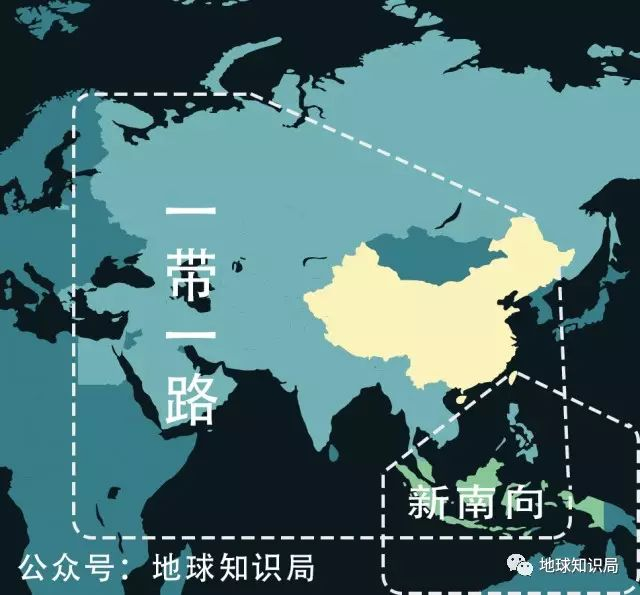
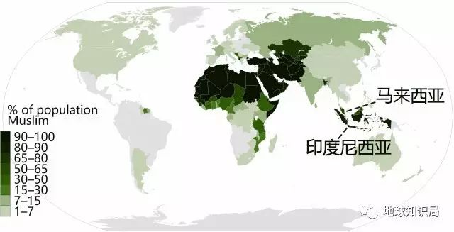
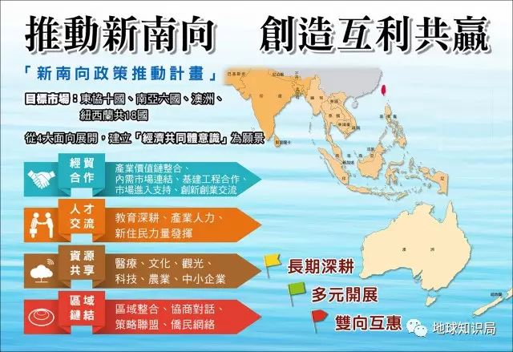
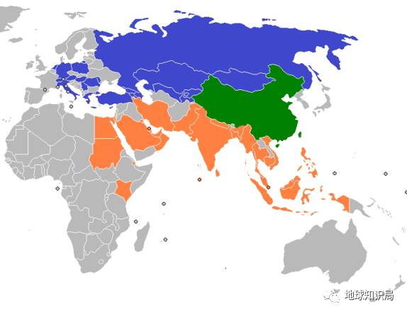
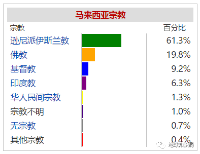
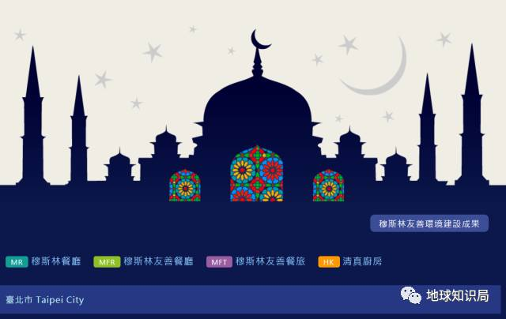
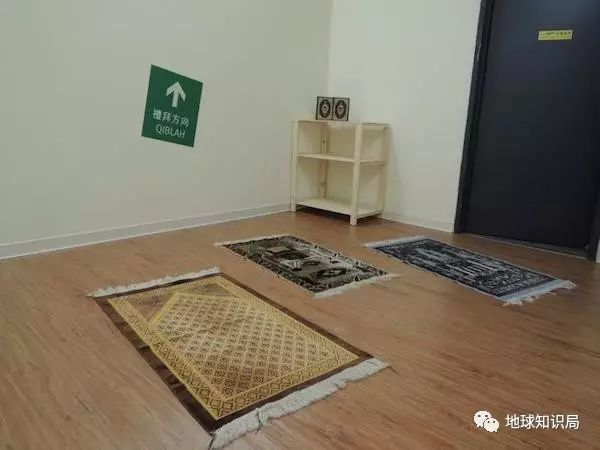
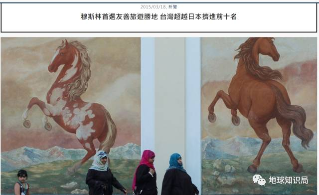

收录于合集

28亿人口的穆斯林市场，
会是下一个世界级风口么？
当中国如火如荼展开“一带一路”战略的同时，蔡英文也在中国台湾一步步推进她的“新南向政策”。
蔡英文的“新南向政策”
▼
这两条路线，前者往西，连接东南亚、中亚诸国与欧洲；后者向东南，对象国包括了印度尼西亚、菲律宾、马来西亚、新加坡等同属东盟的十个国家，然后延伸到澳大利亚和新西兰。
两个政策面向的区域和挑战是有一部分重叠的，就是东南亚国家中庞大的穆斯市场。
“一带一路”与“新南向”
▼

而且，根据联合国全球人口调查显示，穆斯林是全球成长最快的族群。2010年到2050年间，全球穆斯林总人口估计将从16亿升至28亿，其中六成以上都集中在亚洲地区，这便是一带一路或者新南向都想抢先布局穆斯林国家的原因。
穆斯林人口占所在地区的百分比，2014
▼

与一带一路的详尽规划相比，新南向政策简直是迷雾重重，规划总部除了喊出一些口号外，至今毫无建树。
所谓新南向
▼

一带一路示意图
▼

本文不讨论政策孰高孰低，毕竟未来的商机和已取得的成果都是可以互相讨论和分享的。
值得一提的是，现今穆斯林世界最受欢迎和信赖的旅游地，是与台湾近在咫尺的马来西亚。
究其原因，则应归于穆斯林市场的独特性：马来西亚宗教局（Jabatan Kemajuan Islam Malaysia, JAKIM）提供的官方清真认证（Halal certification），是在伊斯兰世界里推行时间最久、最有权威的认证。
马来西亚宪法保障宗教自由
但规定伊斯兰教逊尼派为国教
▼

除了社会价值与道德观念之外，伊斯兰对其信徒的饮食、娱乐或日常用度也影响深远，许多商机的前提都是必须符合可兰经的教义和规范，于是马来西亚高标准的清真认证便为信徒们带来极大便利，令他们乐于前往消费，旅游时亦不用担心触犯戒律。
所以，若想搭上穆斯林世界发展的列车，以马来西亚为标准取得同样高规格的清真认证，便是非常重要的一件事。
清真认证的产业
对于伊斯兰教的清真规范，我国一般民众的理解可能还大多停留在不能吃猪肉、不能喝酒等粗浅的层级。
事实上，国际公认的清真认证所涉及的产业，包括衣食住行共有八大类别，分别是：食品、旅馆、餐厅、零售商品、美妆、屠宰、药品、物流。
文字有限，这里只能对各个产业的规范做简单举例，给读者多一点了解。更多细节的规定，商家在申请时会有专业的认证机构来指教和评估。
以食品和零售商品为例，除了绝对禁止使用的猪肉和酒精以外，还有两栖类动物、宰杀前就已死去的动物、以及动物血液等。
并且，仓储和物流环节也必须要坚持清真的环境，也就是不能与非清真的物品（譬如非清真食物或外教神像等）一起摆放和运输，并需提供可追溯的记录。台湾曾有业者，在运输清真食品的车中安放关公画像，而被取消认证资格。
屠宰业也是一个特别需要注意的产业。首先是宰杀动物的种类，除了猪，其他有尖牙利爪类的动物也是不符合教义的。其次，要制作符合清真要求的肉品，从宰杀环节起就必须由穆斯林信徒操作，并且要精准地将动物体内的血排干净，因为血也是禁物之一。
不仅
▼
而且
▼
在药品生产方面，一些常用的蛋白质药物（如某些疫苗或癌症抗体药物），由于大多是透过仓鼠卵巢细胞生产制造的，所以也很难取得清真认证，因为鼠类也是穆斯林禁止触碰或服用的项目之一。
美妆类一向是顾客消费的主力，虽然与吃下肚的食物或药物不同，只是擦在皮肤上，但还是要防备非伊斯兰认可的物质，例如酒精，或其他以非清真流程屠宰取得的动物油脂，如绵羊油、动物胎盘等等。
▼
穆斯林信徒以遵守教义为荣耀，这些饮食和生活上的限制，在可兰经中都是神给予信徒的考验。这些在非穆斯林的眼中看来，确实有些不便，但其实有时候，我们常见的素食主义者的要求或许比清真还要多一些。
所以，要与这个市场建立长久的信赖与互惠关系并消除文化的藩篱，我们必须对此宗教有充分的了解和尊重，同时尽力减少偏见。
友善穆斯林环境
穆斯林最多的东盟国家，如马来西亚、印尼这两国，其消费能力强于中亚诸国甚多。
到2030年，东盟穆斯林人口的总购买力预计将超过三千亿美元，又因其地理上毗邻台湾与大陆，因此吸引东南亚游客，开发穆斯林友善观光和消费环境，便成为一个重要课题。
然而，对于提供高质量的清真旅游环境，政府能够做到的只有公共设施的部分，绝大多数建设更需要民间的热情推动。
中国台湾自5年前开始对清真旅游环境做整备，借着大批马来西亚和印尼的侨民、移民和留学生的建议和帮助，目前已经取得不错的进展。
中国台湾交通部观光局网站上
关于穆斯林友善环境的界面
可直接在上面查询
适合穆斯林的餐厅和旅馆
▼

公共设施方面
▼
公共设施方面，穆斯林友善环境需要额外增添祈祷室和净下设施。
目前中国台湾的主要机场和火车站，还有13个主要风景区都已添加完毕，目的是为方便一天要做要5次礼拜的穆斯林游客，毕竟全球63%的穆斯林还是坚持每天做5次礼拜。
火车站的祈祷室
▼
祈祷室均处于安静角落，内有清洗设施，为祈祷前的洗手、漱口等小净仪式做好准备，另外还备有礼拜毯、可兰经，和朝向麦加礼拜的方向标识。

净下设施也是考虑到穆斯林信徒依照圣训如厕后需用左手清洁，故需在马桶旁安放莲蓬头或自动冲洗设备。
现如今台湾许多景区也设有
为穆斯林设置的卫生间
▼
餐饮方面
▼
餐饮方面，穆斯林友善环境需要注意的地方可能会比较多。
首先要做到烹饪独立，即不能碰到为一般民众烹饪的厨具，以避免沾染教义中的禁物。菜色方面，要求无猪、酒精、血、两栖这些类别的食材，至于口味则无特殊要求，因为并不是只有做马来西亚或印尼当地菜才是清真，即使是中餐或西餐，只要能提供符合清真要求的原材料和烹调方法，都可称为清真食品。
礼仪服务
▼
至于礼仪服务，也需要提前做好培训，必要时安排男女分座，或者给予独立的房间用餐等。
现在，有些穆斯林友善餐厅甚至推出配合穆斯林斋月的营业时间，因为考虑到穆斯林信徒在斋月期间会有很长的假期，出国旅游的意向反而有上升趋势，同时又希望在旅行期间遵守斋月白天不饮食的规范，所以在斋月开放临晨3点30分（日出时间）之前以及傍晚18点52分（日落时间）之后这两个特殊时段营业，为游客提供方便。
斋月期间由于放假
前往麦加的穆斯林也格外多
▼
住宿环境
▼
为穆斯林打造安心的住宿环境，也是需要经过指导的。
房间内除了摆放可兰经、礼拜毯、指南针（以便定位麦加的方向）和礼拜时刻提醒表这些必需品外，卫生间要有净下设备，房间冰箱内不能摆放酒精类饮品，整个房间不能出现人像或动物图案，电视节目中也不能有色情频道。 在住房安排上，也应尽量安排穆斯林客人住在远离酒吧和舞池等设施的房间。
可兰经、标明的麦加方向&时刻表
▼
床前的礼拜毯
▼
▼
根据中国台湾旅游业者的统计，100%穆斯林旅客最希望严格遵守的，是食品和礼拜方面的戒律，80%的旅客希望能够有符合穆斯林要求的卫生间，以及斋月时期的饮食服务。
最严格的一小部分，才会要求为穆斯林女性设立专属空间，例如另外的泳池、健身房或海滩等公共空间，当然这样保守的旅客并不常见。
医院也设置了祈祷室
▼
这一切友善环境的建设，都是最近5年内才开始的。从中国台湾推行的效果来看，已见到一些成效，去年全球票选穆斯林旅游热门地区，台湾能挤进前十名，说明民间的努力没有白费。
2015的一则新闻页面
穆斯林首选旅游胜地
中国台湾超越日本挤进前十名
▼

目前的欧洲和北美，都有加剧歧视穆斯林的状况出现，但事实证明，种族隔离并不能解决任何问题。反而，越多人口流动和文化接触，纷争和歧视才会减少。
以中国台湾为例，本土的伊斯兰教信徒并不多，大约仅有5万人左右，多为1949年随国民党一起撤退来台的，信仰人数几十年来一直没有增加，反而逐渐减少。
直到1990年之后，穆斯林劳工市场开放，有一大批穆斯林外籍配偶和劳工前来。这个时候，民间对伊斯兰教的歧视还是非常严重的，曾有雇主强迫穆斯林劳工吃猪肉，禁止祈祷，或者禁止穿着穆斯林服装和包头巾的案例。
千禧年之后，随着穆斯林外籍配偶、劳工和观光客越来越多，民众对于穆斯林本身的看法才确有改观，现在已少有文化歧视和种族隔离的行为出现了。
因此可以说，与穆斯林展开文化交流的曙光，其实较难不会出现在欧美国家，反而应该是在拥有6成穆斯林人口的亚洲。
藉由一带一路或新南向等官方政策来资助诸多邻国展开基础建设及经贸往来，固然是很重要的，但是想要最后达到多方共赢的效果，由民间所展现的相互了解和交流才是改变世界真正的推动力量。

来源：地球知识局
筛选：早安老师
编辑：沉安
声 明
国政学人微信公众平台系非盈利学术平台。建立初衷是方便广大学人进行学术研究，促进学术的传播和交流，不做任何商业用途。如有任何权利问题，请直接与我们联系。
您可能还会喜欢：
期刊分享 | 国际关系相关专业所有核心期刊免费获取（最新pdf版）